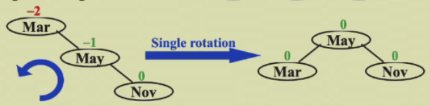
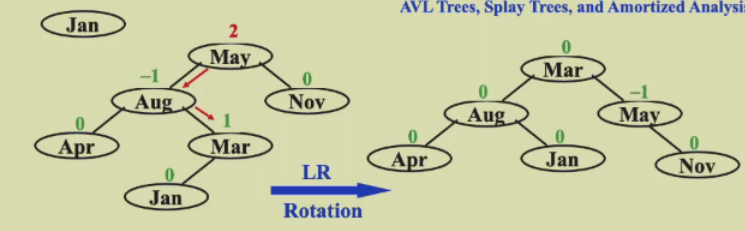

week1
ads week 1
AVL Trees
Target
speed up searching, insert&query&delete are all \(O(ln\space n)\) in one step
Tool
binary search trees
Balanced trees
- empty tree: height balanced, \(h\) of \(T\) is \(-1\)
- no empty binary tree \(T\): with \(T_L\) and \(T_R\)
- \(T_L\) and \(T_R\) are height balanced
- \(|h_L-h_R|\leqslant1\) where \(h_L\) and \(h_R\) are the heights of \(h_L\) and \(h_R\)
- hint: the balance factor \(BF(node)=h_L-h_R\), in an AVL tree, \(BF(node)=-1,0,or\space1\)
Tree rotation!!!
- time complexity: \(O(1)\)
// right rotation
first step: T = right subtree of B
second step: right child of B = A
thrid step: left subtree of A = T
//left rotation
first step: T = left subtree of A
second step: left child of A = B
thrid step: right subtree of B = T

AVL trees insertion!!!
-
\(RR\space rotation\) （被旋转的是May（异常节点的儿子），发生的是left rotation，LL rotation同理）
-
the trouble maker Nov is in the right subtree's right subtree of the trouble finder Mar. Hence it's called an RR rotation

-
-
\(LR\space rotation\) （发生两次旋转，被旋转的都是May（异常节点的孙子），第一次发生left rotation,第二次发生right rotation, RL rotation 同理）
-
the trouble maker Jan is in the left subtree's right subtree of the trouble finder May. Hence it's called an LR rotation

-
Some analysis
-
\(n_h\) : the min num of nodes in a height balanced tree of height h
\(n_h=n_{h-1}+n_{h-2}+1\)
- \(n_h=F_{h+2}-1\), \(F_{h+2}\) is Fibonacci number, \(h=O(ln\space n)\)
Splay Trees
Target
any m consecutive tree operations starting from an empty tree take at most \(O(MlogN)\) time
Rotation
when query/find
for any nonroot node \(X\),delete its parent by \(P\) and grandparent by \(G\)
-
case 1: \(P\) is the root \(\rightarrow\) rotate \(X\) and \(P\)
-
case 2: \(P\) isn't the root
- zig-zag: the same as \(RL\) and \(LR\)
- zig-zig:
- 1st step: rotate \(P\) towards \(G\)
- 2nd step: rotate \(X\) towards \(P\)
Deletions
step 1: Find \(X\) \(\leftarrow\) \(X\) will be at the root.
step 2: Remove \(X\)
step 3: Find Max (\(T_L\))
step 4: Make \(T_R\) the right child of the root of Max(\(T_L\))
Amortized Analysis
Target
Any M consecutive operations take at most \(O(MlogN)\) time.
- worst-case bound \(\geqslant\) amortized bound \(\geqslant\) average-case bound
Ways
- Aggregate analysis
- example: Multi-pop
- Accounting method ?
- Potential method